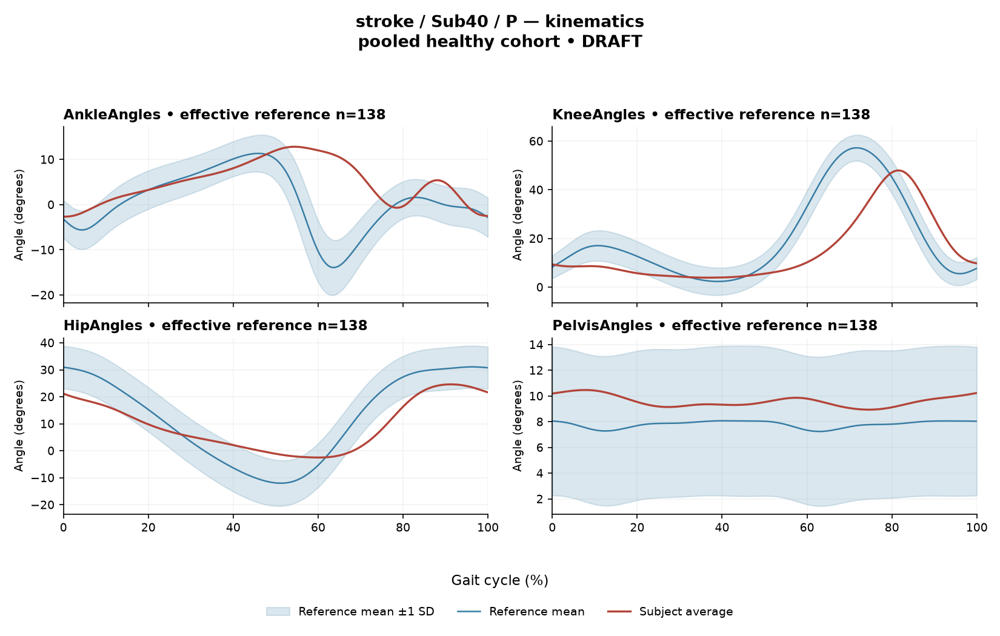

rater2 / Report 77 of 105 / Review spreadsheet row 78
R811F7437E4D8D1C5
Case: stroke_Sub40_P
Read this report independently. Record judgments in the workbook. Browser pages do not save ratings.
Report: exact saved text
# Gait Report Interpretation — Sub40_P **Interpretation version:** limited-evidence-v3.1-candidate **Scope:** Research-level interpretation of a supplied quantitative summary. This is not a diagnosis, not a clinical severity grading, and not a treatment recommendation. --- ## 1. Objective Findings **Participant and side.** Sub40_P is a participant in the stroke cohort. All findings below are from the **paretic** side. The analysis cycle for this side runs from one initial contact of that limb (0%) to the next initial contact of the same limb (100%); these two endpoints are successive occurrences of the same event, not a single instant. No intermediate gait event or phase boundary is supplied in this input, so all timing is reported as a percentage of the analysis cycle only. **Spatiotemporal values as supplied.** - Gait speed **0.24 m/s**, which falls in the "household ambulator (<0.4 m/s)" speed band. This label denotes a speed band only; it does not measure walking independence, safety, or real-world community mobility, and nothing in this input speaks to those. - Cadence **54.8 steps/min**. - Step length symmetry index **−29.5%**, computed with the **successive-footfall** definition (each heel at its own initial contact). By the stated sign convention, a negative value means the **paretic step is shorter** than the non-paretic step. The alternative (instantaneous) definition can yield a different value for some subjects; only the successive-footfall value is supplied here. **Reference used.** Kinematic deviation is computed against **138 pooled healthy subjects**, 1001 phase points, source `main_cohort_excel`. This reference pools both body sides and all ages and is **not age- or speed-matched** to this participant. **Critical comparability limit.** This participant's speed (0.24 m/s) lies **well below the healthy reference cohort's speed floor of 0.80 m/s**. Therefore **no speed-matched healthy reference exists in this dataset** for this subject. Every reference comparison below (EMG z-statistics, Gait Variable Scores, composite score, CCI intervals) unavoidably conflates the effects of walking at a very low speed with any stroke-specific control changes, and these two contributions **cannot be separated from these data**. Deviations from the reference should be read as *differences from an unmatched empirical reference*, not as quantified disease effect, and they do not by themselves establish a diagnosis, a mechanism, or a clinical impairment. **Channels available and not available.** - Available: seven EMG ensemble-averaged envelopes (GAS, RF, VL, BF, ST, TA, ERS) with detected intervals, coverage, peak normalized amplitude, and max |z|; two co-contraction indices; sagittal kinematics for ankle, knee, hip and pelvis. - **Sagittal plane only** — coronal and transverse joint data are not included in this input. - **Not supplied in this task:** individual toe-off, matched muscle-specific normal timing references, stride-level variability, raw-signal quality checks, and expert plots. Other release fields (e.g., age, sex, gait events, time post-stroke, clinical scores, non-paretic-side designation) are outside this input; their absence here does **not** mean they are absent from the source dataset. No non-paretic-side data are supplied for within-subject side comparison. --- ## 2. EMG Envelope and Threshold Findings **How these numbers must be read.** Each curve is an **ensemble-averaged envelope** across the available strides, with normalization to a shared participant-, side-, and muscle-specific maximum before averaging (the denominator is not shared between sides). Amplitudes are therefore **relative envelope values** — not absolute neural activation, muscle force, or strength — and muscles must not be ranked as stronger or weaker from them. An averaged curve cannot demonstrate stride-to-stride variability, so nothing below should be read as "consistent" or "variable" across strides. Detected intervals are properties of **this averaged envelope under the stated rule**: regions exceeding **20% of that same curve's own peak**, with a minimum retained interval of 3% of the cycle. They are **not** physiological onsets, offsets, contraction durations, or evidence of inactivity outside the intervals. An interval written with X > Y wraps the 100%→0% boundary, meaning the mean envelope remained above its own threshold across the cycle-defining initial-contact boundary. A reported endpoint of 0% or 100% is the analysis-window boundary, not a physiological onset. Because thresholds are curve-relative, coverage values are not comparable between muscles as amounts of "activity." | Muscle | Retained interval(s) (% cycle) | Coverage | Boundary continuity (mean envelope) | Peak norm. amp. | Max abs z (location) | |---|---|---|---|---|---| | GAS | 5–74; 99–4 (wraps) | 75% | above threshold across boundary | 0.33 | 5.1 above reference, at 56% | | RF | 0–100 | 100% | above threshold across boundary | 0.58 | 5.5 above reference, at 28% | | VL | 87–73 (wraps) | 89% | above threshold across boundary | 0.55 | 6.4 above reference, at 30% | | BF | 0–9; 14–39; 40–77; 89–96 | 78% | not reported as crossing the boundary | 0.27 | 3.0 **below** reference, at 98% | | ST | 86–74 (wraps) | 87% | above threshold across boundary | 0.52 | 5.0 above reference, at 32% | | TA | 73–39 (wraps) | 71% | above threshold across boundary | 0.53 | 3.3 **below** reference, at 72% | | ERS | 0–100 | 100% | above threshold across boundary | 0.63 | 3.9 above reference, at 80% | **Coverage and interval structure at the mean-envelope level.** Coverage of the analysis cycle by retained intervals is high for all seven channels (71–100%). For **RF** and **ERS** the retained interval spans the full reported window (0–100%, coverage 100%), so no sub-threshold segment was retained as a gap in the averaged curve; this is a property of the mean envelope under the 20%-of-own-peak rule and does not establish continuous physiological contraction, nor does it establish anything about individual strides. For **GAS, VL, ST and TA**, retained intervals wrap the initial-contact boundary, i.e. the mean envelope was above its own threshold across that boundary. **BF** is reported with four separate retained intervals (0–9; 14–39; 40–77; 89–96) and 78% coverage; the segments between them did not meet the threshold-plus-duration criteria in the mean envelope, which is a statement about the averaged curve and the retained-interval rule, not about muscle inactivity in any stride. Note that BF's coverage figure is rounded, so the exact residual below-threshold fraction is not recoverable from these values. Because individual toe-off and matched muscle-specific normal timing are not supplied, **no interval can be assigned to stance, swing, loading response, mid-stance or pre-swing**, and none can be mapped to a phase function such as weight acceptance, push-off or limb clearance. No conventional 60% stance/swing split is applied. Likewise, timing here cannot be called normal, early, delayed or prolonged — the required matched timing reference is absent. Anatomically, the recorded channels correspond to ankle plantarflexor (GAS) and dorsiflexor (TA), knee extensors (RF, VL), knee flexors/hip extensors (BF, ST), and erector spinae (ERS); naming these actions is a statement about anatomy, not about what the muscle did at a given cycle percentage. **Max |z| interpretation.** Each max |z| is an **extreme-value statistic**: the largest absolute standardized difference across all 1001 phase points versus the pooled healthy mean/SD at each phase. It is therefore **not** a single-observation z-score, and the conventional 2-SD rule does not apply — in this dataset every one of 109 healthy controls exceeds |z| = 2 on at least one muscle, and per-muscle healthy 95th percentiles for this statistic run 3.65 (ERS) to 4.61 (TA), higher still under leave-one-out. Against those per-muscle percentiles as supplied: VL (6.4), RF (5.5), GAS (5.1) and ST (5.0) exceed their respective published healthy 95th-percentile magnitudes, ERS (3.9) exceeds the ERS value of 3.65, while TA (3.3) and BF (3.0) do not exceed the TA 95th-percentile figure of 4.61. These percentiles are **pooled calibration values, not matched leave-one-out normal limits**, and — given the absence of any speed-matched reference here — exceeding them does not establish abnormal physiology, a stroke-specific control change, or a diagnosis. The **location** of each max |z| marks where the standardized difference from the reference was largest; it is **not** necessarily the time of peak envelope amplitude and does not identify a gait event. "Above reference" / "below reference" is relative to the **phase-specific reference mean at that location** (e.g., BF is below the reference mean at 98%; TA is below the reference mean at 72%), not relative to a healthy percentile limit. **Co-contraction indices.** CCI here is the Falconer–Winter index over the **full continuous envelopes** across the whole cycle (2 × common area / summed areas). It is a whole-cycle overlap index of normalized envelopes — **not** simultaneous activation time, not muscular force, and not a phase-specific result. It can be non-zero even when detected burst intervals do not overlap, because sub-threshold envelope area contributes. - **TA vs GAS: CCI = 0.60.** The supplied healthy reference for this dataset is median 0.39 (2.5th–97.5th pct 0.24–0.59). This value lies just **above** the upper endpoint of that interval, i.e. very close to it (0.60 vs 0.59). - **RF vs BF: CCI = 0.46.** The supplied healthy reference is median 0.68 (2.5th–97.5th pct 0.48–0.83). This value lies just **below** the lower endpoint, again in close proximity (0.46 vs 0.48). Both are near-boundary values; the supplied figures are rounded, so they do not justify classifying hidden unrounded values on one side or the other of an endpoint. Being outside these empirical intervals does **not** establish pathological co-activation, spasticity, stiffness, impaired motor control, or any diagnosis; being inside them would not have established normal co-activation or normal muscle function. CCI values depend on the normalization and envelope pipeline used here, so thresholds or values from other studies or algorithms must not be transferred to them. Given the speed mismatch, the direction of these two departures cannot be attributed specifically to stroke rather than to very slow walking. --- ## 3. Kinematic and Reference Comparisons All values are **sagittal plane only**; no coronal or transverse channels are included, so out-of-plane deviation is simply not characterized by this input. | Channel (sagittal) | ROM (deg) | Gait Variable Score | |---|---|---| | Ankle | 15.5 | 8.64 | | Knee | 44.1 | 13.94 | | Hip | 27.1 | 8.49 | | Pelvis | 1.5 | 1.89 | **Composite kinematic deviation score (GPS-like): 9.28.** This is the RMS of the per-joint Gait Variable Scores over the supplied sagittal channels — it is a "GPS-like" composite, **not** the validated 9-variable Gait Profile Score. Against the supplied composite reference (median 5.1, 95th percentile 10.7), 9.28 is above the median and below the 95th percentile. **What GVS and the composite can and cannot say.** Both are **summary magnitudes of difference** from the stated pooled reference across the cycle. Neither localizes *when* in the cycle the difference occurred, nor in which direction the waveform deviated (e.g., more flexed vs more extended), nor to any gait phase. Within this subject, the **knee** GVS (13.94) is the largest of the four supplied channels, followed by ankle (8.64) and hip (8.49), with **pelvis** (1.89) the smallest — but this ordering describes the size of summary differences from an unmatched reference, not the anatomical source of a problem and not a severity ranking. **ROM values.** ROM is reported as a descriptive magnitude. ROM alone does **not** establish a clinical restriction in the absence of an appropriate matched comparison, and no matched ROM reference is supplied here. The small sagittal pelvic excursion (1.5 deg) and the ankle, knee and hip ROM values are therefore reported as measured numbers only; no statement about restricted, excessive or compensatory motion is supportable from this input. ROM and GVS are also distinct quantities — a channel can show a given excursion and still differ from the reference waveform, and vice versa. **Reference limits restated for these comparisons.** The 138-subject reference pools sides and ages and contains no walker at 0.24 m/s (cohort floor 0.80 m/s). The supplied composite percentiles are **pooled calibration values, not matched leave-one-out normal limits**. Consequently the composite value of 9.28 and the per-joint GVS values quantify *difference from an unmatched empirical reference* and cannot establish a disease effect, a clinical diagnosis, or a severity grade. A speed falling inside some overall range would not have proved a matched reference existed; here the speed falls outside the range altogether. --- ## 4. Questions for Further Clinical Assessment These are open questions raised by the limits of the supplied summary. None presupposes that the mechanism or measurement issue in question has been observed, and none implies a treatment. 1. **Gait events.** Can individual toe-off (and any other intra-cycle event) for this paretic cycle be retrieved from the release? Without it, every EMG interval and deviation location remains a cycle percentage and cannot be assigned to a phase or a phase-specific function. 2. **A speed-appropriate comparison.** Is any reference available — within or outside this dataset — for walking near 0.24 m/s, or a within-subject non-paretic-side dataset? This is the only way to begin separating very-slow-walking effects from stroke-specific control changes in the reference comparisons above. 3. **Contralateral EMG and kinematics.** Are non-paretic-side envelopes and kinematics available with their side-specific normalization denominators documented? Since the EMG denominator is not shared between sides, any side comparison would need that documented before amplitudes are compared at all. 4. **Stride-level data.** Are per-stride envelopes, stride counts and the number of strides entering each ensemble average retrievable? The averaged curves used here cannot address stride-to-stride consistency of the interval pattern, and coverage figures should not be assumed to describe every stride. 5. **Signal quality.** Have raw-signal quality checks (electrode placement, crosstalk between adjacent channels such as GAS/TA or RF/VL, baseline noise, movement artifact, saturation) been performed for these seven channels? Would such a check change the interpretation of the very high coverage values, particularly the 100% coverage for RF and ERS and the wrapping intervals? 6. **Threshold and method sensitivity.** How do the interval structure and coverage values change under alternative threshold levels or minimum-duration rules, and how do the two CCI values change under alternative normalization or envelope methods? Both near-boundary CCI values (0.60 vs upper endpoint 0.59; 0.46 vs lower endpoint 0.48) may be method-sensitive. 7. **Out-of-plane kinematics.** Are coronal and transverse joint channels available? Only sagittal data are supplied, so a full 9-variable GPS could not be computed and out-of-plane deviation is uncharacterized. 8. **Step-length definition.** Would the instantaneous step-length definition yield a different symmetry value for this participant? The supplied −29.5% uses the successive-footfall definition, and the two definitions diverge for some subjects. 9. **Cohort context fields.** Are age, sex, time post-stroke, clinical scores and the non-paretic-side designation retrievable from the release for this participant? They are outside this input and would be needed for any matched or clinically contextualized interpretation.
Requirements for this report
Fill the corresponding Coverage rows in the workbook. G03 is included once. These are the approved requirements, not prefilled judgments.
| Excel row | ID | Required content | Components / optional content |
|---|---|---|---|
| 401 | R139 | Describe walking speed 0.24 m/s and that it is below the stated 0.80 m/s reference floor; no reference at this speed is supplied. | AND: displayed speed and that it lies below the 0.80 m/s reference floor, so no speed-supported healthy reference exists in this dataset. Optional: cadence, speed-band label (not a functional claim). One sentence may also serve the comparability half of G03. |
| 402 | R140 | Identify the knee as the leading GVS difference AND another lower-limb difference using ankle OR hip. Exact GVS values are optional; identify the findings as reference-relative sagittal summary differences. | AND: knee as leading AND (ankle OR hip). Stating which joint is larger is optional; asserting the reverse order is an error. Exact GVS values are optional; no waveform direction, phase or restriction is required. |
| 403 | R141 | Describe EITHER VL envelope above its phase-specific reference mean at approximately 30% of the analysis cycle (displayed max |z| 6.4) OR RF envelope above its phase-specific reference mean at approximately 28% of the analysis cycle (displayed max |z| 5.5). One complete muscle-specific route is sufficient. Within each route, muscle identity AND mean-relative direction AND approximate cycle location are required. Exact max-|z| repetition is optional. | OR: one complete route suffices. Required for each route: muscle identity AND direction relative to the phase-specific reference mean AND approximate cycle location. Optional: exact max |z| value, comparison with the supplied endpoint span (descriptive only). Prohibited: percentile classification, gait phase, physiological onset, severity. |
| 404 | R144 | Describe the supplied successive-footfall step-length index -29.5% and its meaning: the paretic step is shorter. | AND: displayed index and the direction supported by its sign. Optional: formula, definition wording. Acceptable phrasing for small displayed values: "a small difference with the paretic step slightly shorter/longer" (not a cutoff). Prohibited: restating the index as a percentage shortening (E01), severity grades, whole-gait symmetry generalization (E07 issue, not an omission). |
| 405 | G03 | Express a meaningful limitation of reference comparability AND why the comparison cannot establish disease effects or clinical diagnosis; for controls it cannot establish disease or overall normality. One statement may also support a case requirement. | AND: comparability and inference limitations |
Exact model input: system instruction
Draft a research gait-report interpretation for a physical therapist or physiatrist using only the supplied quantitative summary. This is a limited-evidence interpretation task, not diagnosis or treatment selection. Rules: - Describe the participant's actual group and side, available findings, and missing channels accurately. Healthy-group membership does not prove normal physiology; deviations from an empirical reference do not by themselves establish disease. - Treat detected EMG intervals and coverage as properties of an averaged envelope under the stated threshold and duration rule. Do not convert them into physiological onset, offset, duration, continuous contraction, or inactivity outside the intervals. You may describe reported coverage, retained intervals and boundary continuity at the mean-envelope level. Do not infer the same pattern in every individual stride. Say no below-threshold segment only when the supplied evidence establishes that; a rounded coverage value or no retained interval alone does not establish it. - Individual toe-off and matched muscle-specific timing references are not supplied in this task. Use percentages of the analysis cycle. When the input explicitly identifies an initial-contact boundary, you may name that boundary or describe numerical proximity to it. Do not assign stance/swing, loading response, pre-swing, mid-stance or another event to a percentage, or substitute a conventional 60% split. Anatomical muscle actions may be named, but do not map an interval to a gait-phase function such as clearance, push-off or weight acceptance. Do not characterize timing as normal, early, delayed or prolonged without the required evidence. - Respect the supplied normalization method. Relative envelope amplitude is not strength or force, and average curves do not establish stride-to-stride variability. - Report CCI as a whole-cycle overlap index of normalized EMG envelopes. You may compare it with the supplied empirical interval or a supplied median, including proximity to an endpoint. Do not invent an unavailable median. Being within that interval does not establish physiologically normal co-activation or normal muscle function; being outside it does not establish pathological co-activation, stiffness, impaired control or a diagnosis. CCI is not simultaneous activation time, muscular force or a phase-specific result. It depends on normalization and envelope methods; do not transfer values or thresholds from other studies or algorithms. - Describe GVS and GPS-like as summary differences from the stated reference. Neither localizes waveform direction or phase; ROM alone does not establish a clinical restriction without an appropriate comparison. Do not treat pooled calibration percentiles as matched leave-one-out normal limits. - Where using a reference comparison, convey both limited comparability and the inability to establish a disease effect or clinical diagnosis from that comparison. One clear explanation per report is enough; age and speed need not be recited as separate checklist words. A speed inside an overall range does not prove that an appropriate matched reference exists. Apply these limits to controls as well. - The location of maximum |z| is the largest standardized difference from the reference, not necessarily the time of peak envelope amplitude or a gait event. Above/below reference in an EMG row means relative to the phase-specific reference mean at that location, not relative to a healthy percentile limit. - Preserve numerical direction and the displayed precision. Do not invent values, clinical severity grades, statistical significance, or unavailable reference values. Descriptive comparisons with supplied values remain allowed. Near-boundary rounded values do not justify classifying hidden unrounded values. - Clinical follow-up questions may ask whether a mechanism or measurement issue exists; do not presuppose it has already been observed. Do not recommend treatment. If EMG is unavailable, section 2 may simply state that envelope timing, amplitude and CCI cannot be assessed. Reference-only plots do not provide patient EMG. Use exactly these four sections: 1. Objective Findings 2. EMG Envelope and Threshold Findings 3. Kinematic and Reference Comparisons 4. Questions for Further Clinical Assessment
Exact model input: case summary
Candidate interpretation version: limited-evidence-v3.1-candidate
Draft the four-section report using only this subject's supplied evidence.
Metric definitions (read before interpreting any number below):
- All joint angles and ROM values are SAGITTAL PLANE only. Coronal/transverse data are not included.
- The released EMG curves are ensemble-averaged envelopes. For each participant and recorded muscle, normalization uses a shared maximum across the available strides before averaging; individual strides are not independently rescaled to their own peaks. This pipeline uses the released mean curves without further amplitude normalization. In the checked stroke release, the denominator is participant-, side-, and muscle-specific; it is not shared between sides. The local array audit verified 614 evaluable combinations, not all 700; 86 lacked valid nonzero paired samples. Amplitudes are relative envelope values, not absolute neural activation, force, or strength. Do not rank muscles as stronger or weaker from these amplitudes, or infer stride-to-stride variability from an average curve.
- Above-threshold intervals are the regions where the averaged envelope exceeds 20% of that curve's own peak, minimum retained interval 3% of the cycle (by sample count). An interval written as (X%-Y%) with X > Y wraps across the 100%->0% cycle boundary (envelope remains above threshold across the cycle-defining event). An onset of 0% is the analysis-window boundary, not necessarily a physiological onset. "No interval detected" means no region met the threshold + duration criteria; it does NOT mean the muscle is inactive or non-functional.
- CCI is the Falconer-Winter co-contraction index computed on the full continuous envelopes (2*common area / summed areas), so it can be non-zero even when the DETECTED burst intervals of the pair do not overlap (sub-threshold activity contributes).
- The composite kinematic deviation score is the RMS of the per-joint Gait Variable Scores over the sagittal channels provided ("GPS-like", not the validated 9-variable GPS).
- Step length symmetry index: 200*(paretic - non-paretic)/(paretic + non-paretic), in %. NEGATIVE means the paretic-side step is SHORTER. Two operational step-length definitions exist (successive-footfall: each heel's position at its own initial contact; instantaneous: both heels at the same instant) and give different values for some subjects -- the definition actually used is stated next to the symmetry value.
- "Max |z| deviation" is the LARGEST absolute z-score across all 1001 phase points of the cycle, comparing this curve to the healthy-cohort mean/SD at each phase. This is an extreme-value statistic, NOT a single-observation z-score: in this dataset every one of 109 healthy controls exceeds |z| = 2 on at least one muscle, and per-muscle healthy 95th percentiles for this statistic run 3.65 (ERS) to 4.61 (TA) -- higher still under leave-one-out. Do not label a value abnormal by the conventional 2-SD rule; use the healthy reference range given per muscle where provided.
- Healthy-cohort CCI reference (this dataset): RF-vs-BF median 0.68 (2.5th-97.5th pct 0.48-0.83); TA-vs-GAS median 0.39 (0.24-0.59). Composite score reference: median 5.1, 95th percentile 10.7.
- COHORT BACKGROUND (calibration context, not necessarily the exact reference used for this subject -- the actual reference composition is stated in a dedicated line with the subject data below): the full healthy cohort is 138 subjects for kinematics, effective n = 106-109 per muscle for EMG (29 controls have no usable EMG; completeness varies by age), pooling both body sides and all ages; it is not age- or speed-matched to this subject. A leave-one-out run uses one subject fewer than these counts.
- SPEED SUPPORT LIMIT (applies to most stroke subjects in this dataset): the healthy reference cohort's self-selected walking speeds span 0.80-1.79 m/s. If this subject's gait speed is below 0.80 m/s, NO speed-matched healthy reference exists in this dataset -- 41 of the 50 stroke subjects are below that floor. Deviations from the reference then conflate slow-walking effects with stroke-specific control changes, and the two cannot be separated from these data. Describe deviations from the reference as such; do not attribute them wholly to stroke pathology.
- Additional source fields are outside this input. Age, sex and gait events may be available in the release; time post-stroke, stroke clinical scores and a non-paretic-side designation apply only to the stroke cohort, as applicable. Do not claim every listed field exists for every participant. Distinguish not supplied, not applicable and documented absent recordings.
The released paretic-side cycle runs from initial contact of that limb at 0% to its next initial contact at 100%. The cycle boundary may be called initial contact; the endpoints are successive occurrences, not one instant. No intermediate event or phase boundary is supplied.
Model-visible information boundary: the summary contains mean-curve metrics and algorithm-detected intervals, not individual toe-off, matched normal muscle timing, stride-level variability, raw-signal quality checks, or expert plots. Information not supplied here must not be described as absent from the source dataset. Gait-cycle percentages alone do not identify gait phases.
Subject: Sub40_P (group: stroke, affected side: paretic)
Gait speed: 0.24 m/s (household ambulator (<0.4 m/s)) [The ambulation label denotes a speed band only, not measured walking independence, safety or real-world community mobility.]
Cadence: 54.8 steps/min
Step length symmetry index: -29.5% (step-length definition: successive_footfall)
Composite kinematic deviation score (GPS-like): 9.28
Deviation reference actually used for this subject: 138 healthy subjects (pooled), 1001 phase points, source: main_cohort_excel.
EMG envelope findings:
- GAS: above-threshold interval(s) 5%-74%; 99%-4% (wraps cycle boundary), 75% of cycle above threshold, above threshold across cycle boundary, peak normalized amplitude 0.33, max |z| vs healthy reference: 5.1 (above reference, at 56% of cycle)
- RF: above-threshold interval(s) 0%-100%, 100% of cycle above threshold, above threshold across cycle boundary, peak normalized amplitude 0.58, max |z| vs healthy reference: 5.5 (above reference, at 28% of cycle)
- VL: above-threshold interval(s) 87%-73% (wraps cycle boundary), 89% of cycle above threshold, above threshold across cycle boundary, peak normalized amplitude 0.55, max |z| vs healthy reference: 6.4 (above reference, at 30% of cycle)
- BF: above-threshold interval(s) 0%-9%; 14%-39%; 40%-77%; 89%-96%, 78% of cycle above threshold, peak normalized amplitude 0.27, max |z| vs healthy reference: 3.0 (below reference, at 98% of cycle)
- ST: above-threshold interval(s) 86%-74% (wraps cycle boundary), 87% of cycle above threshold, above threshold across cycle boundary, peak normalized amplitude 0.52, max |z| vs healthy reference: 5.0 (above reference, at 32% of cycle)
- TA: above-threshold interval(s) 73%-39% (wraps cycle boundary), 71% of cycle above threshold, above threshold across cycle boundary, peak normalized amplitude 0.53, max |z| vs healthy reference: 3.3 (below reference, at 72% of cycle)
- ERS: above-threshold interval(s) 0%-100%, 100% of cycle above threshold, above threshold across cycle boundary, peak normalized amplitude 0.63, max |z| vs healthy reference: 3.9 (above reference, at 80% of cycle)
Co-contraction indices:
- TA_vs_GAS: CCI = 0.60
- RF_vs_BF: CCI = 0.46
Joint kinematic findings (sagittal plane):
- AnkleAngles: range of motion 15.5 deg, Gait Variable Score 8.64
- KneeAngles: range of motion 44.1 deg, Gait Variable Score 13.94
- HipAngles: range of motion 27.1 deg, Gait Variable Score 8.49
- PelvisAngles: range of motion 1.5 deg, Gait Variable Score 1.89Reference context for expert review
# Reference context: stroke/Sub40_P Mean/SD reference: 138 controls; method pooled; exclusions: []. Effective reference counts: GAS=109, RF=108, VL=109, BF=106, ST=108, TA=107, ERS=106, AnkleAngles=138, KneeAngles=138, HipAngles=138, PelvisAngles=138. The exact system and user input files define what the model receives. The EMG and kinematic plots are supplementary expert evidence, not model inputs. The plotted mean plus/minus one SD is descriptive, not a clinical normal band. Negative lower EMG bands can result from mean minus SD; they do not imply negative recorded EMG. The max-|z| p95 span in the input is pooled calibration context. Complete muscle-specific LOO thresholds are not supplied; an appropriately indeterminate classification is allowed. Controls are excluded from their own mean/SD reference, but cohort-level calibration has prior reference-data reuse. It is not an independent matched clinical limit. GPS-like is a four-channel sagittal composite, not the validated nine-variable GPS. The pooled median/p95 background is not a matched LOO normality boundary. CCI uses continuous normalized envelopes over the whole analysis cycle. An empirical interval comparison does not establish normal muscle function. Threshold intervals and rounded coverage describe the averaged envelope. Rounded 100% coverage and one interval do not prove absence of short below-threshold gaps. Use the group-specific cycle and normalization provenance in the actual input. No individual intermediate gait events or matched normal muscle timing are supplied. Administrative age and published bilateral speed are not added to this input. Expert-visible plots do not justify requiring unseen direction, phase or morphology. For a new-case requirement, cite exact input evidence. Select clinically useful descriptive content without inferring a diagnosis or severity from rank alone.
EMG and kinematic curves
The curves are supplementary expert evidence. Only the saved text inputs were supplied to the model; do not require curve-only observations.
EMG

Kinematics
